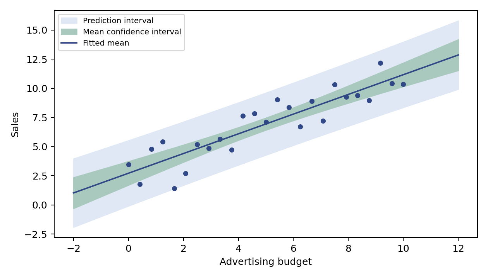

代码 3.2.2-08 · 绘制均值区间与预测区间
使用虚构教学数据。请在完整 Notebook 中按章节顺序运行；本块可能依赖前面定义的变量、导入或拟合结果。数学推导和带编号的引用见完整学习笔记。
逐步读代码
Path表示目录，mkdir(exist_ok=True)是路径对象的方法，目录存在时不报错。图片相对于 Notebook 的运行目录保存。default_rng(42)创建固定种子的随机数生成器；normal(0, 1.5, size=25)生成 25 个均值 0、标准差 1.5 的噪声；这些是模拟数据。linspace在端点间均匀取点。- 训练矩阵 Xp 有 25 行、2 列，残差自由度为 23；网格矩阵 Zp 有 100 行。
(Zp @ Cp) * Zp是对应元素相乘，sum(axis=1)沿每行求和，等于每个新位置各自的二次型。 subplots返回画布 fig 和坐标轴 ax；fill_between在上下界之间填色。先画更宽的预测区间，再画均值区间。颜色是可替换的十六进制样式值，不需背诵。plot画均值曲线，scatter画观测点；set设置轴名，legend显示图例，tight_layout调整边距。- 路径中的
/用于拼接文件名；savefig保存 PDF 矢量图与 PNG 预览，dpi控制 PNG 分辨率。display(fig)在 Notebook 输出图像，随后close释放画布，避免重复显示。
本块没有文字打印输出；生成图如下。
